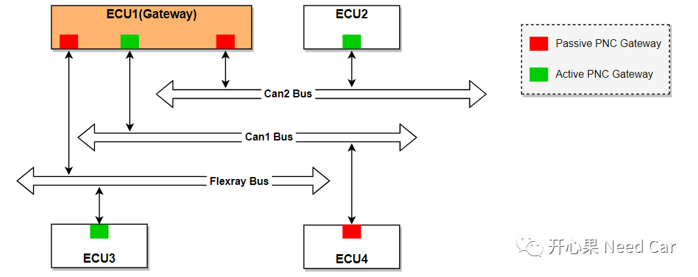
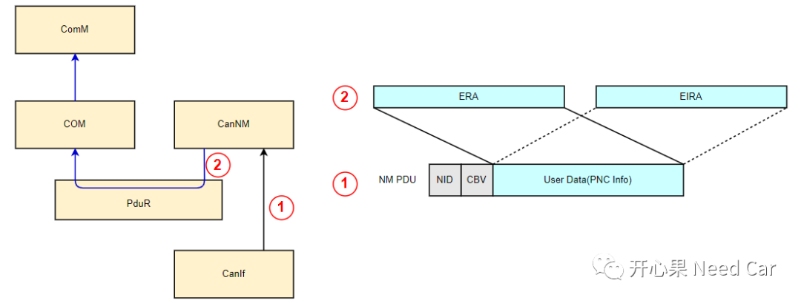
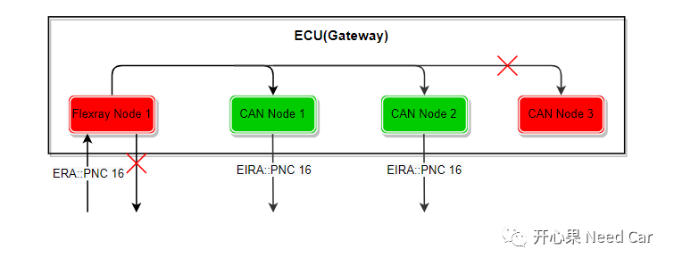
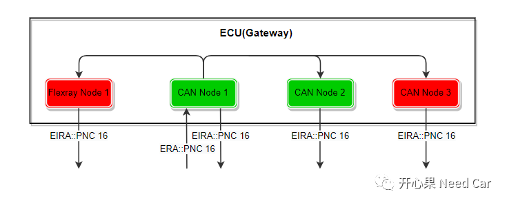
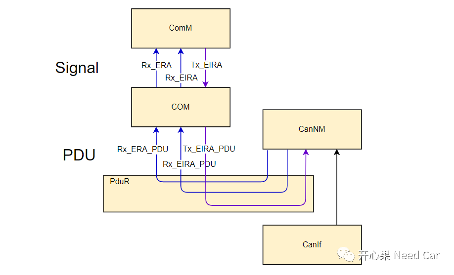
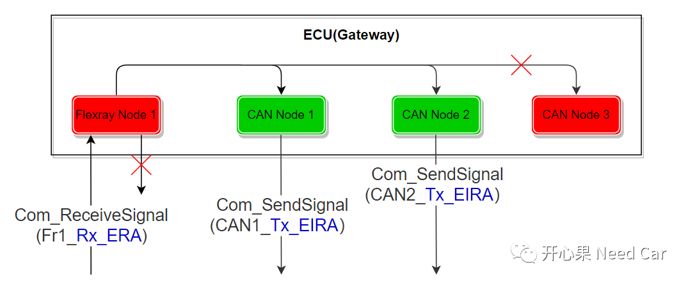

开心果 Need Car · 2022-07-11T12:22:00+08:00 · 微信原文
如果初学Autosar网络管理，Partial Network功能的ERA/EIRA、PNC Gateway相对比较费解（我开始学习这块时的感受）。本文，聊一聊两个概念。
1、PNC路由拓扑

PNC路由的实质是将PNC请求（PNC #n）由总线A转发到总线B。那如何将PNC请求的信息由当前总线转发到其他总线呢？依赖ERA信号。在Autosar规范中，如果使用PNC Gateway功能，需要使能配置参数ComMPncGatewayEnabled （ComM模块的配置参数），即：ComMPncGatewayEnabled = TRUE。当PNC Gateway功能打开以后，默认PNC Gateway = COMM_GATEWAY_TYPE_ACTIVE，除了COMM_GATEWAY_TYPE_ACTIVE，PNC Gateway还有一种类型：COMM_GATEWAY_TYPE_PASSIVE。所以，当PNC Gateway功能打开以后，ComM的Channel可以配置成COMM_GATEWAY_TYPE_ACTIVE或者COMM_GATEWAY_TYPE_PASSIVE。
2、ERA信号如何传递给ComM呢？
ERA信号中包含PNC信息，而PNC信息由NM Msg的User Data部分携带。以CAN总线为例，分析一下ERA信号如何将PNC信息传递给ComM:
Step1：当某个CAN节点由CAN总线接收到NM Msg以后，经由CanIf传递给CanNM，由于PN功能的使能，且配置参数CanNmPnEraCalcEnabled = TRUE。CanNM模块将NM PDU中的User Data（包含PNC信息部分）映射到两个PDU：ERA PDU、EIRA PDU（如果CanNmPnEiraCalcEnabled = TRUE）；
Step2：CanNM通过PduR将ERA PDU路由给COM模块（PduR模块只能路由PDU，不能路由Signal）；
Step3：COM模块将接收到的ERA PDU进一步拆分成ERA Signal（实际工程中，ERA PDU只包含ERA Signal，即：ERA PDU长度 = ERA Signal长度，比如：4 byte）；
Step4：此时，ComM可以通过COM的标准接口Com_ReceiveSignal(Rx_ERA_Signal)获取ERA信号中的PNC信息，再通过Com_SendSignal(Tx_EIRA_Signal）接口将PNC信息发送给目标Channel，进而实现PNC的路由功能。
ERA信号传递路径如下所示：

3、PNC路由原理
PNC路由本质是将当前网段PNC #n请求转到目标网段，也就意味着ECU具有多个物理通道，ECU对应的ComM模块具有多个Channel。使能PNC Gateway以后，即可配置ComM Channel的路由类型：COMM_GATEWAY_TYPE_ACTIVE、COMM_GATEWAY_TYPE_PASSIVE。这两者有什么区别呢？
假设：某ECU有4个节点，1个Flexray，3个Can。Flexray1和CAN3配置成COMM_GATEWAY_TYPE_PASSIVE；CAN1和CAN2配置成COMM_GATEWAY_TYPE_ACTIVE。Flexray1、CAN1、CAN2、CAN3均关联PNC16。
Case1：COMM_GATEWAY_TYPE_PASSIVE节点收到PNC16 = 1

Flexray1接收到NM Msg，且PNC16 = 1，Flexray1发送NM Msg时，对应的PNC16没有置位（=1）操作；
Flexray1需要将PNC16 = 1转发给PNC Gateway类型是COMM_GATEWAY_TYPE_ACTIVE的节点，即：CAN1和CAN2。COMM_GATEWAY_TYPE_ACTIVE节点发送NM Msg时，置位PNC16（=1）；
Flexray1不会将PNC16 = 1信息转发给PNC Gateway类型是COMM_GATEWAY_TYPE_PASSIVE的节点，即：CAN3。

CAN1接收到NM Msg，且PNC16 = 1，CAN1发送NM Msg时，对应的PNC16置位（=1）；
CAN1需要将PNC16 = 1转发给PNC Gateway类型为COMM_GATEWAY_TYPE_ACTIVE、COMM_GATEWAY_TYPE_PASSIVE的节点，即：Flexray、CAN2和CAN3，且这3个节点发送NM Msg时，均将PNC16置位（=1）。
4、EIRA信号理解


往期精彩回顾